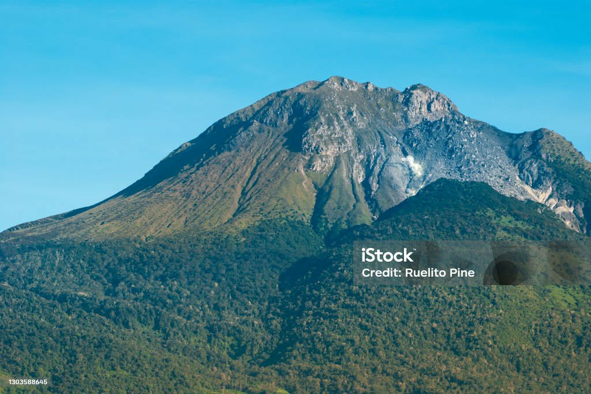
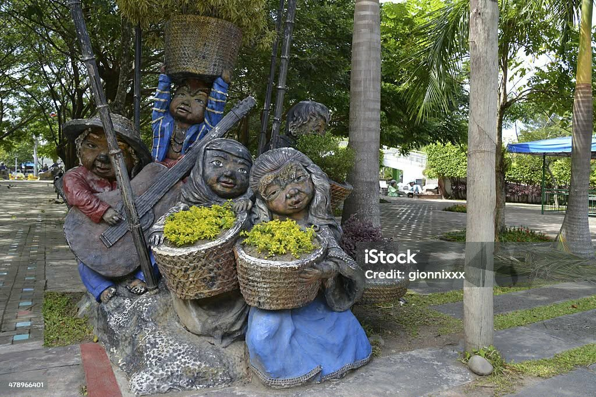
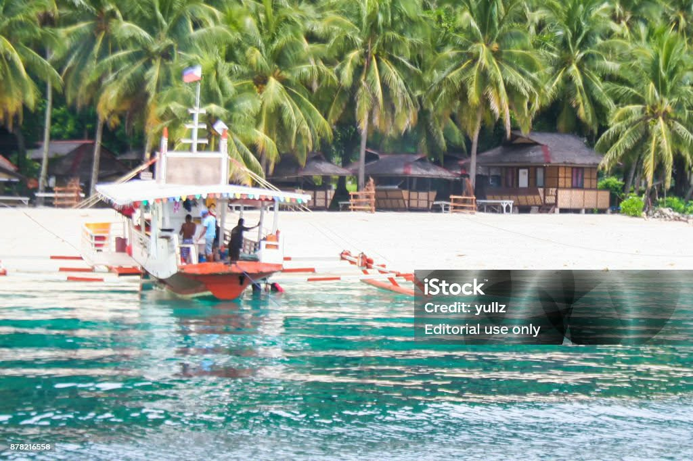
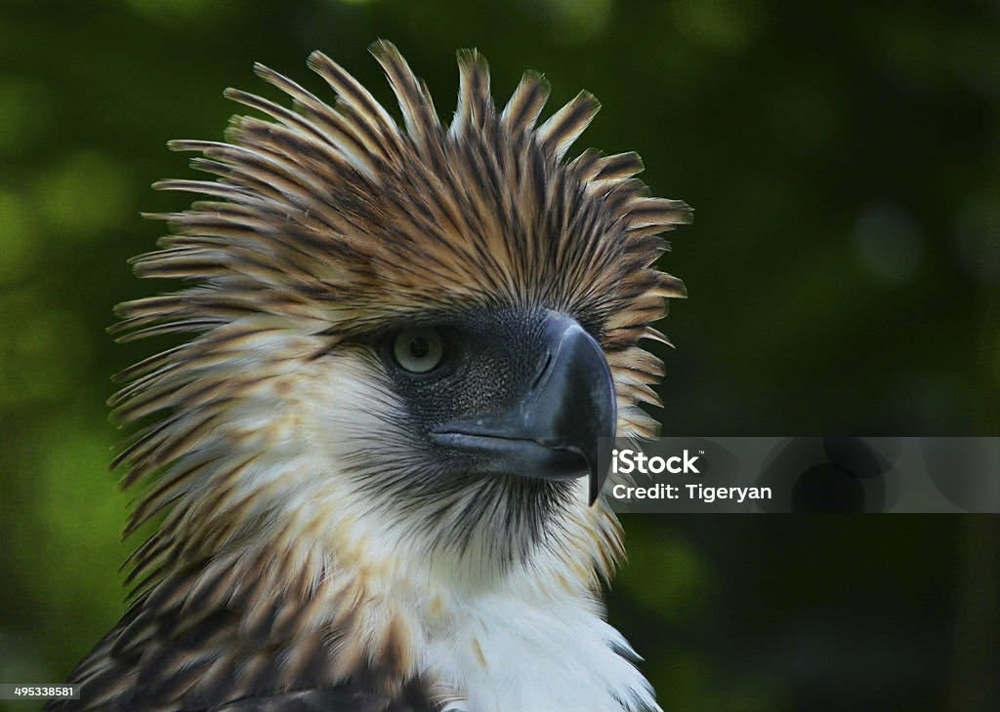

A vibrant and culturally rich city in the Philippines where people are friendly and hospitable and the 2nd safest city in the Philippines.

The highest peak in the Philippines and a favorite destination for hikers and nature lovers.

A beautiful public park in the heart of the city, known for its giant sculptures and greenery.

A stunning island getaway with white sand beaches and clear blue waters just minutes from the city.

A must-visit conservation area where you can see the endangered Philippine eagle.